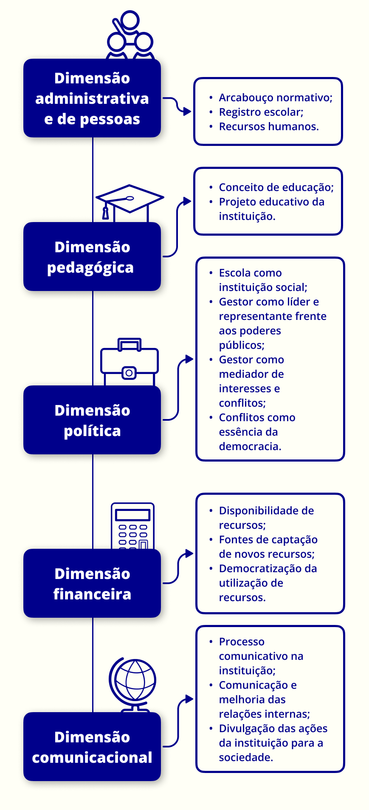

capítulo 2
As Dimensões da Gestão Escolar
É preciso lembrar, em primeiro lugar, que um diretor de escola é muito mais que um administrador. Ele é, antes de tudo, um educador.
Na realidade da EPT, muitas vezes se observa um distanciamento em relação ao entendimento do conceito de Educação e, por consequência, não se vê a relação nem se valoriza a dimensão pedagógica na gestão. Eis aqui, segundo Heloísa Lück (2014), um grande desafio para o gestor e para o servidor que trabalha na EPT: articular múltiplas dimensões, tanto técnicas quanto políticas, que só se efetivam quando articuladas entre si. E, para além destas articulações, na EPT é sempre necessário ter clareza dos princípios da formação humana integral, do trabalho como princípio educativo, da prática social como produtora de conhecimentos, da indissociabilidade entre ensino-pesquisa-extensão e do reconhecimento dos educandos como produtores de conhecimentos.
Nosso entendimento de educação é fundamentado na sua característica de relação humana, que ocorre por meio de um processo pedagógico necessariamente dialógico, não dominador e que garante a condição de sujeito ao educador e ao educando. O professor Vitor Henrique Paro (2016) defende a educação como fundamental para a realização histórico-humana e, por isso, deve ser um direito de todos na qualidade de agenciador da condição de seres humanos. Desse modo, a escola pública recebe características especiais e importância plena enquanto esfera da divisão social do trabalho, responsável pela universalização do saber.
É neste contexto que também compreendemos a EPT como uma política de direito à educação que promove o acesso, a permanência e a inclusão. E, por esta razão, faz-se necessário refletir sobre todas as dimensões da gestão do processo educativo, não deixando nenhuma excluída ou com menos prioridade. Assim sendo, este capítulo tem como objetivo refletir sobre as dimensões da gestão escolar por meio do estudo das dimensões da gestão educacional a partir de Grabowski (2014), Paro (2012; 2015; 2016) e Neves (1995), sendo elas: administrativa e de pessoas, pedagógica, política, financeira e comunicacional. Para tal, vamos explorar e defender o desafio da gestão pedagógica, construindo uma gestão democrática com formação humana integral e emancipatória na EPT.

Título: Dimensões da Gestão na EPT
Fonte: Grabowski (2014).
Elaboração: Prosa (2025a).